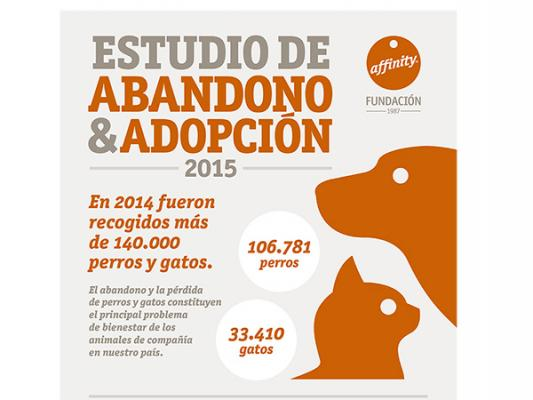
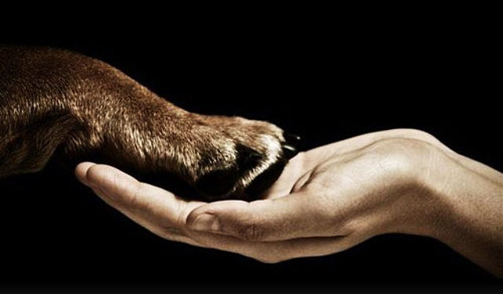

Fundada en 1976, la Asociación para la Defensa de los Derechos del Animal, fue la primera ONG española dedicada a la defensa y al bienestar de los animales en general.
Declarada de utilidad Pública en 1981 y sin ánimo de lucro, ADDA es una Organización No Gubernamental, apolítica e independiente.
ADDA forma parte del Consejo de Directores de la Sociedad Mundial para la Protección de los Animales, WSPA. Desde hace años colabora y trabaja, conjuntamente, en diversas coaliciones de ámbito europeo y con diferentes asociaciones de distintos países.
El trabajo y los objetivos de la Asociación se centran principalmente en el ámbito de:
Quienes dirigen la ONG y establecen los programas de actuación lo hacen con plena dedicación, de forma voluntaria y desinteresada.
ADDA se financia de las aportaciones de sus socios, miembros colaboradores, donantes y mercadillos benéficos.
Conseguimos que se aprobase la primera ley de Protección Animal en España en el año 1988 y la reforma de la segunda ley aprobada en el 2003, con el respaldo de más de 50.000 firmas, logrando entre otros aspectos destacados, la prohibición del sacrificio de animales abandonados. Presionamos y colaboramos para introducir mejoras en diversas normativas a nivel local, autonómico, nacional y europeo.
Iniciamos una campaña para declaración oficial de Barcelona "Ciudad Antitaurina" en el año 2004 con el apoyo de 245.000 firmas, y desde el año 2004 hasta el 2010, para la supresión de las corridas de Toros en Catalunya con la entrega en el Parlamento de 676.500 firmas.
También desde la asociación realizamos campañas divulgativas, programas educativos y la promoción y organización desde el año 2005, del Salón para el Bienestar y la Defensa del Animal Abandonado, "Animaladda". Un evento pionero, entre cuyos resultados ha sido posible que centenares de perros y gatos abandonados hayan encontrado un nuevo hogar.
Aquí dejamos un vídeo recopilatorio de 10 años de "Animaladdas":
También desde la ONG ADDA se han realizado numerosas acciones y denuncias contra los espectáculos basados en el sometimiento y la tortura de los animales, las malas condiciones de la cría intensiva, el transporte y el sacrificio, promoviendo el uso de alternativas a la experimentación y concienciando sobre un consumo más ético y responsable que permita reducir práctivas abusivas y de explotación, logrando mejoras y cambios positivos.
En el año 1975, la comunicación y la difusión tenían sus limitaciones. No existía Internet, Fax, e incluso el video era incipiente. Un empleado de la compañía de ferrocarriles, Benito de Benito, residente en Mataró (Barcelona) sensible y preocupado por los animales, tuvo la iniciativa de publicar un anuncio en la prensa barcelonesa, convocando a ciudadanos/as interesados/as en la problemática de los animales a reunirse con la finalidad de intercambiar sentimientos e ideas sobre el tema. De aquel grupo de personas asistentes a la convocatoria surgió la propuesta, dada la necesidad y el vacío existente, de fundar una asociación cuya exclusiva finalidad fuese la defensa de los animales en general.
Bajo el compromiso estatutario de "fomentar el buen trato a todos los animales, atendiendo de cualquier forma legal a su protección y defensa, sin recursos económicos, pero con la ilusión y voluntad de sus fundadores, ADDA estableció su primera sede social en la ciudad de Mataró, posteriormente trasladada a la ciudad de Barcelona, con oficina en Madrid y posteriormente extendida a otras ciudades españolas.
En el mes de septiembre de 1977, recién legalizada ADDA y como entidad miembro de la Sociedad Internacional de Protección de los Animales, ISPA, con sede en Londres, tuvo la oportunidad de intervenir y votar favorablemente a la propuesta de texto de la Declaración Universal de los Derechos del Animal, definitivamente proclamada el 15 de Octubre de 1978. Desde la creación de la Sociedad Mundial para la Protección de los Animales WXPA, que absorbió a la ISPA, ADDA figura como uno de los miembros fundadores, manteniendo su presencia en el Consejo Asesor de Directores. En el año 1981 ADDA fue oficialmente reconocida como entidad de "Utilidad Pública".
Denunciamos prácticas como la cría y caza de animales para lucir su piel, la explotación y el maltrato que sufren los animales en los circos, la caza furtiva, captura y tráfico de animales, los festejos crueles, la experimentación en animales y el abandono y maltrato de mascotas debido a la irresponsabilidad de sus dueños entre otros.
Queremos concienciar sobre este tema especialmente ya que es un problema cercano a la gente y que en la mayoría de casos se puede prevenir.
Según el estudio de affinity realizado este 2015, las principales razones de abandono que se alegan son:
| Factores económicos | Camadas indeseadas | Comportamiento del animal | Pérdida de interés en el animal | Fin de temporada de caza |
|---|---|---|---|---|
| 16% | 13% | 12% | 9% | 9% |
Además, uno de los datos más destacables es que el 43% de los perros y el 40% de los gatos que fueron abandonados habían sido regalados a sus dueños.
Podéis ver el estudio al completo pinchando en la siguiente foto:
La mayoría de casos de abandono podrían haber sido evitados con un poco de concienciación y si los dueños hubiesen sido más responsables, cualquier perro o gato independientemente del carácter inicial que tengan puede ser educado y las camadas inesperadas pueden evitarse esterilizando al animal por ejemplo.
Sobre todo preocupa el hecho de que la gran mayoría de perros y gatos que acaban siendo abandonados habían sido regalados a sus dueños, algo fruto del desconocimiento e irresponsabilidad de la persona que los regala, los animales no son un juguete ni algo que tomar a la ligera, un animal conlleva una gran responsabilidad y un gasto económico por muchos años, normalmente entre 10 o 15 y la decisión de si tener una mascota o no la debería tomar cada persona teniendo muy en cuenta que va a ser para toda la vida, nunca nunca jamás se deberían regalar mascotas bajo ninguna circunstancia y cargar a alguien con una responsabilidad que no quiere, con el consiguiente sufrimiento que eso acabará produciendo en el animal.
Dejamos aquí un mensaje en contra del abandono de mascotas:
Puedes ver un listado actualizado de las protectoras de animales por zonas pinchando en la siguiente foto:
